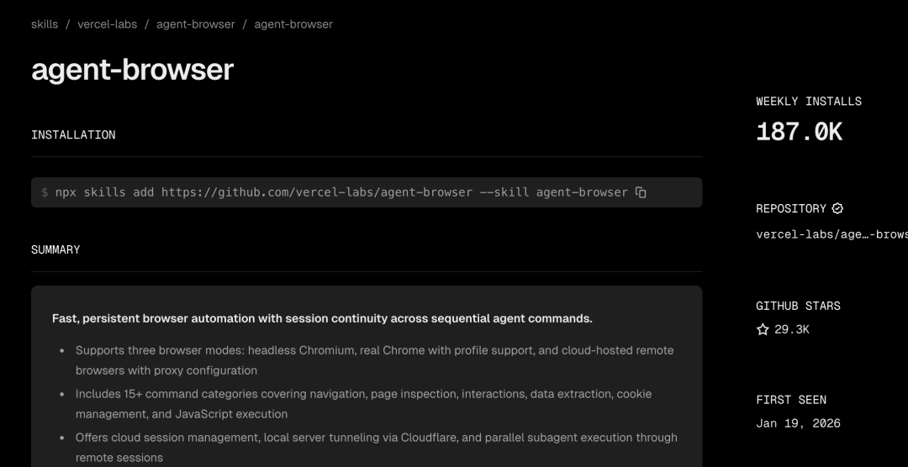
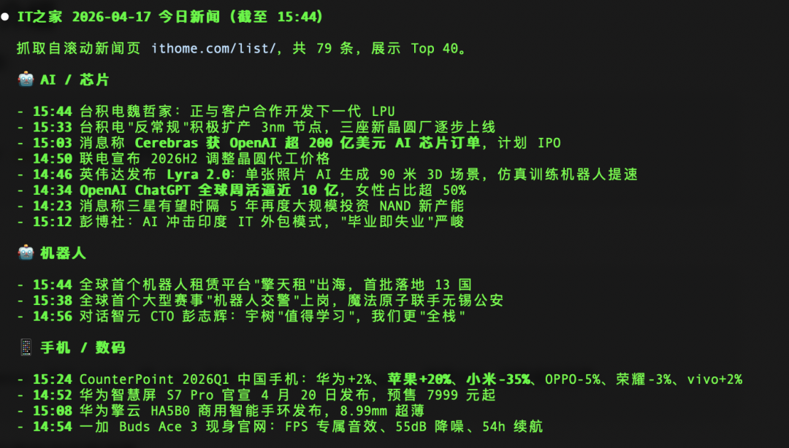
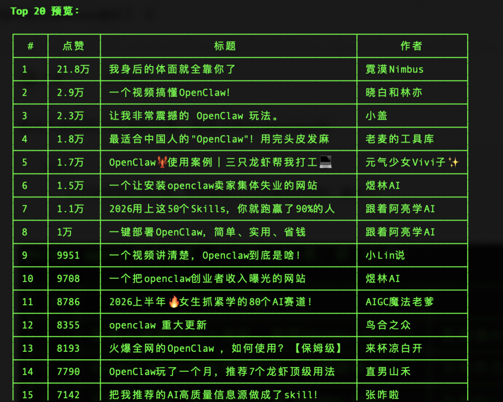
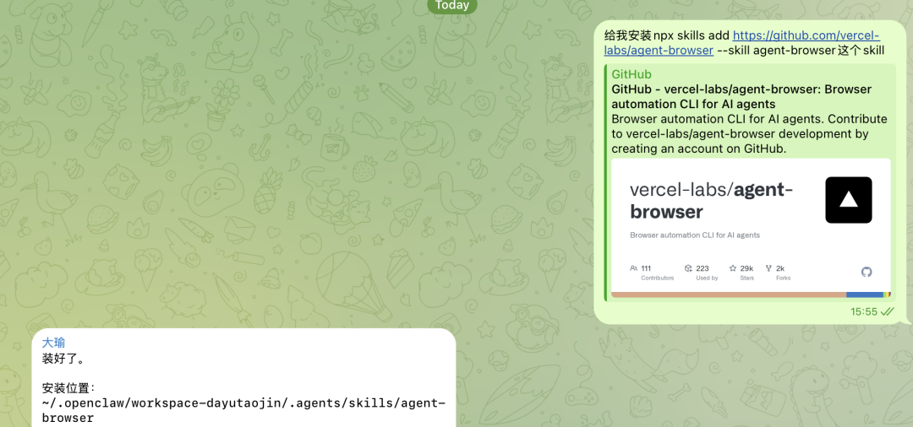
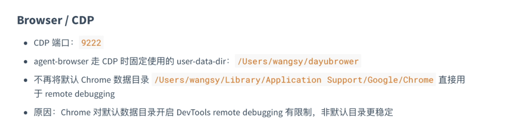

今天给大家分享一个skill：agent-browser

这个skill单周下载18.7万，欢迎程度特别高。
说句实话，大家太需要一个能让 AI 真正“动手操作浏览器”的工具了
agent-browser-skill介绍
安装完skill你可以这样说：
agent-browser open it之家获取今天的新闻。
他本质就是抓取网页、点击、填表等模拟浏览器的操作。

但是这种无头模式很容易被浏览器检测到，如果遇到网站对爬虫限制比较严格，就会报错。
这个时候我们就要采用更复杂的方法：
调用agent-browser 这个skill，用 CDP 开启9222端口，访问google，搜索XXX，给我返回结果。
就会打开一个新的浏览器进程，模仿浏览器的操作，进行内容爬取。譬如之前这样：

安装方法：
这个skill，支持claude、cursor、openclaw、hermes等。
如果你在openclaw可以直接这样给他说：
给我安装npx skills add https://github.com/vercel-labs/agent-browser --skill agent-browser这个skill
等待安装好，我们就可以直接用了。

另外，可能很多用户发现，第一次已经登录了账号密码，但是第二次再用却发现账号密码又消失了。
解决办法，就是告诉openclaw：
用agent-brower CDP打开浏览器的profile要固定指定位置，并保存到tools.md中。后续都找这个位置。

写在后面的话
大瑜也建了一个关于skill的交流群，加微信：helloaigc2023，回复“skill”，我拉你进群。
当然，看大瑜公众号的都是老粉了，大瑜最近建了一个知识星球，大瑜会把AI的使用技巧、好用的方法，以及踩坑复盘的经历都发到星球，一年时间仅需50元。欢迎来围观。